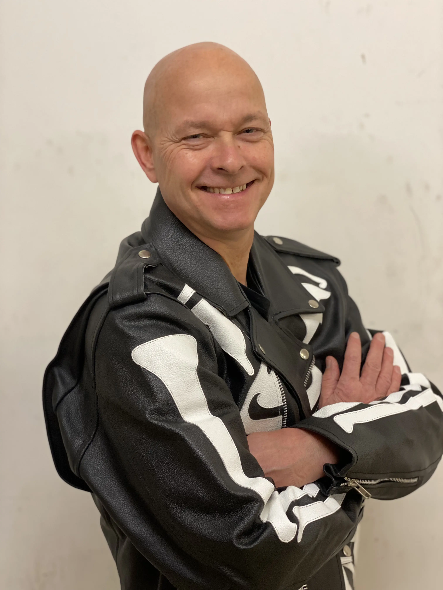
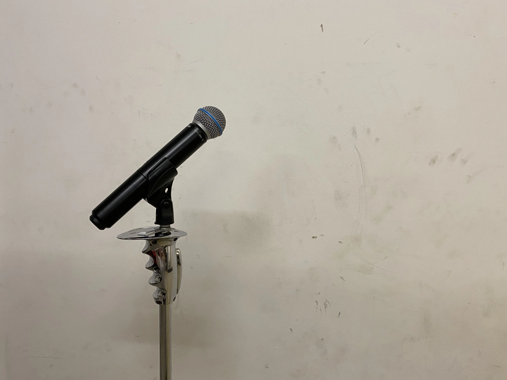
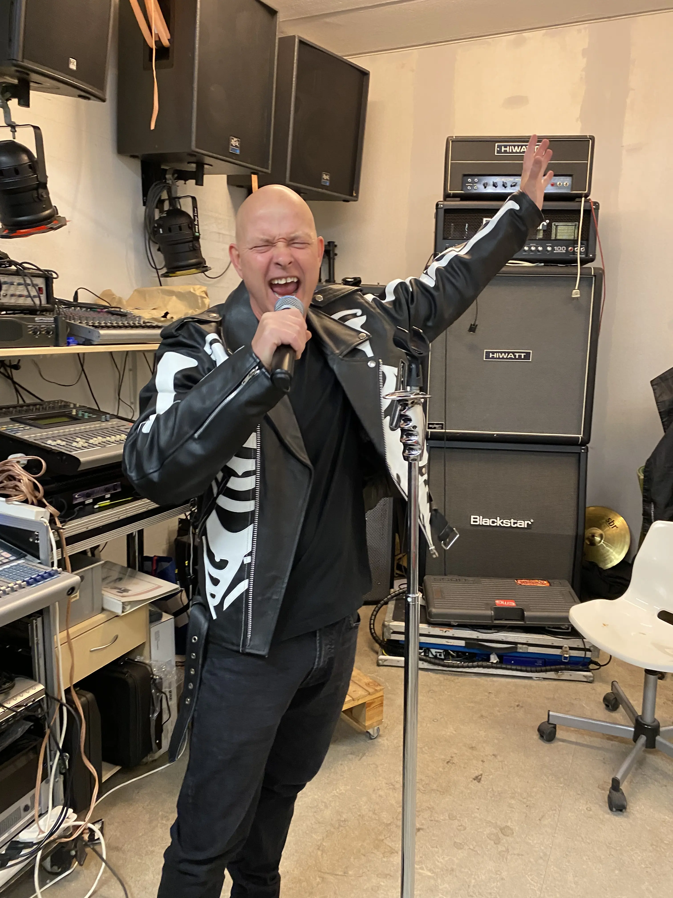
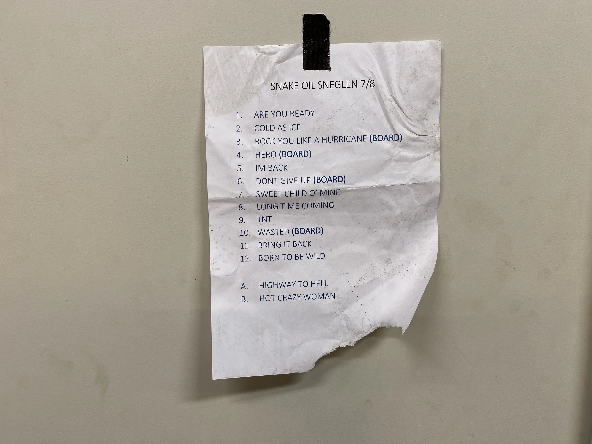
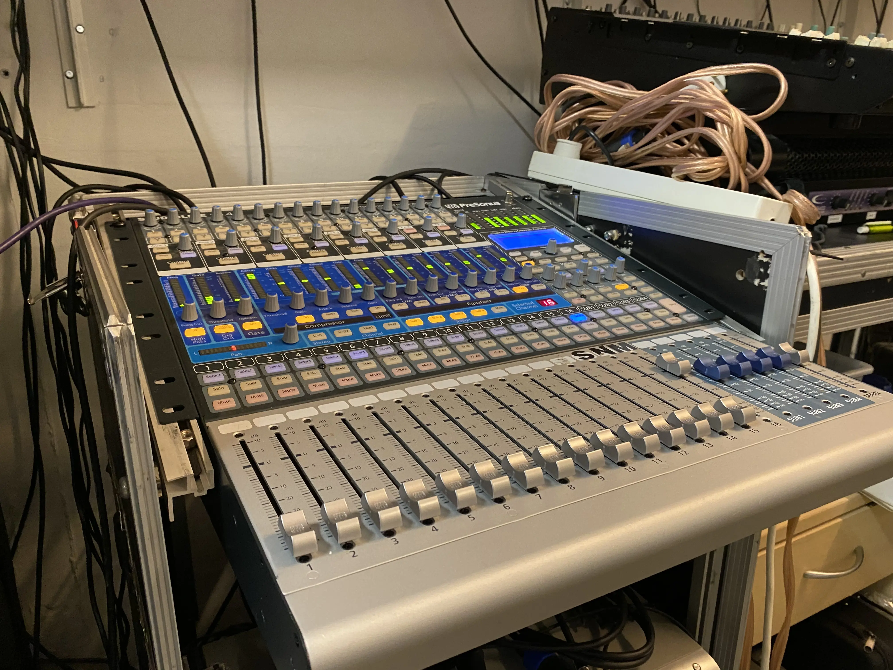

Morten Torp Hansen
Sanger

Morten Torp Hansen er forsanger i hård-rock bandet "Snake Oil." Bandet spiller både originale sange samt covers.Han startede med at synge da han gik i ungdomsklub. Der var ingen andre der turde gøre det så der var frit slag. Når han synger, får han en fornemmelse af at alt andet er ligegyldigt. Han har ikke de store fremtidsplaner inden for musikken, han ønsker blot at komme ud og spille flere steder med sit band.
Inspiration finder han mest ved at digte i hovedet. Han tager nogengange inspiration fra sit eget liv, da det kan være svært at undgå som han selv siger.



